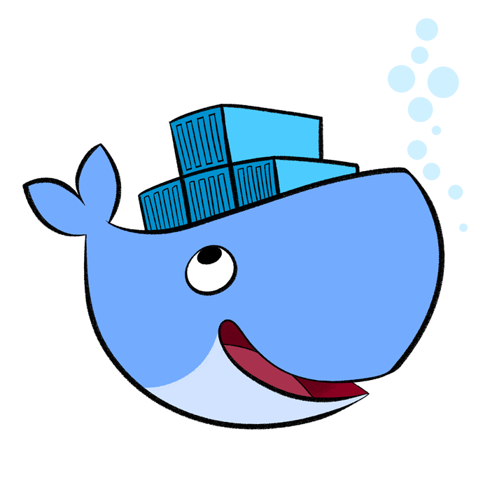

Dockerizando Aplicações PHP

Jefferson Souza
Programador PHP a 7 anos, participante da comunidade Carioca de desenvolvedores PHP.
Gosto de estar por dentro de novas tecnologias e de soluções que agilizem o desenvolvimento e otimize a performance.
Docker

O que é Docker?
Docker é uma plataforma Open Source escrito em Go, que é uma linguagem de programação de alto desempenho desenvolvida dentro do Google, que facilita a criação e administração de ambientes isolados.
O Docker possibilita o empacotamento de uma aplicação ou ambiente inteiro dentro de um container, e a partir desse momento o ambiente inteiro torna-se portável para qualquer outro Host que contenha o Docker instalado.
O Docker utiliza como backend default o LXC, com isso é possível definir limitações de recursos por container (memória, cpu, I/O, etc.)
Wait... what?!?
Você disse Virtualização?
Como funciona uma VM

Como funciona o Docker

Images
A image é um 'state' do seu container. As images podem ser extendidas e alteradas, para melhor atender a sua aplicação.

Containers
O Container seria a 'execução' da sua aplicação.

Gostei, como faço?!
Seu app
Como iniciar um container?
docker run --name="meuapp" -v /path/to/myapp:/var/www/html -p 8888:80 jeffersonsouza/php-fpm:alpinedocker run --name="meuapp" -v /path/to/myapp:/var/www/html -p 8888:80 jeffersonsouza/php-fpm:alpine
Dockerfiles
Com o arquivo Dockerfile você pode definir as regras e criar a sua própria imagem.
Exemplo de Dockerfile
FROM jeffersonsouza/php-fpm:alpine
MAINTAINER Jefferson Souza <hsinfo@gmail.com>
ENV ENV production
COPY ./ /var/www/html
VOLUME /var/www/html
Para Gerar sua imagem
docker build -t meuapp .
Para executar...
docker run --name="meuapp" -p 8888:80 meuappDocker Compose
A proposta do docker compose é a possibilidade de orquestrar seus containers, utilizando uma linguagem mais simples e declarativa para a criação dos containers.
version: "2"
services:
meuapp:
image: meuapp
restart: always
ports:
- 8888:80
Para executar...
docker-compose up -dPodemos avançar ao infinito e além